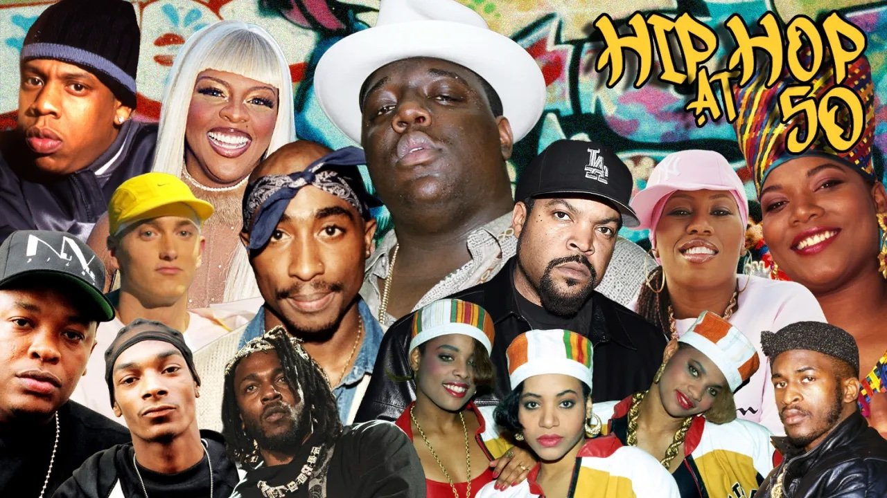
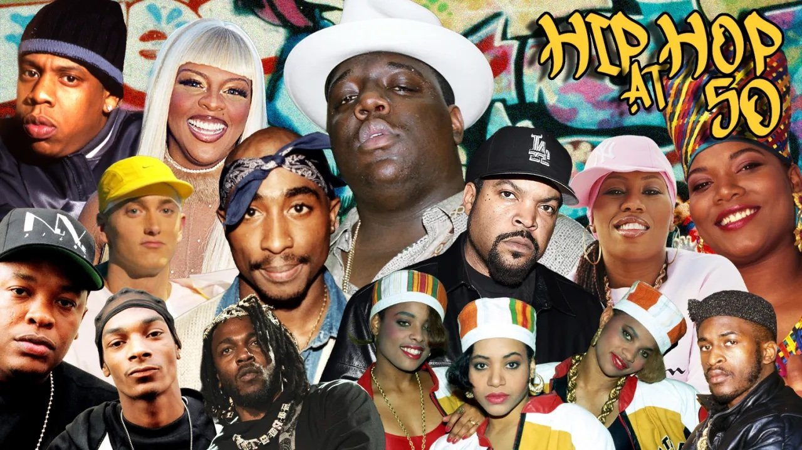

Old-school hip-hop
A hip-hop kezdeti időszaka az 1970–80-as évekből, funk és disco hatásokkal, egyszerűbb beatekkel és közösségi témákkal. Előadók: Run-D.M.C., Furious Five.
 

A hip-hop egy kultúra és zenei műfaj, amely az 1970-es évek végén született New York Bronx negyedében. Négy fő eleme a rap, DJ-zés, breaktánc és graffiti. A hip-hop zene a társadalmi kommentárok és személyes történetek hangja lett.
A hip-hop kezdeti időszaka az 1970–80-as évekből, funk és disco hatásokkal, egyszerűbb beatekkel és közösségi témákkal. Előadók: Run-D.M.C., Furious Five.
Az 1990-es évek klasszikus hangzása, erőteljes dobokkal és soul/jazz mintákkal. Előadók: Nas, The Notorious B.I.G..
A városi élet, bűnözés és társadalmi igazságtalanságok témáit feszegeti. Előadók: Tupac, Ice Cube, Snoop Dogg.
Sötét, horrorisztikus témák, ijesztő képi világ, disszonáns hangzással. Előadók: Ghostemane, Diggy Graves.
Modern, sötét hangulatú stílus Chicago-ból, erőszakos és városi témákkal. Előadók: Chief Keef, Pop Smoke.
Kísérletező, sokszor filozofikus hangvételű stílus, amely más műfajokat is ötvöz. Előadók: Eminem, Denzel Curry.
Az amerikai déli régióból származó, kemény 808-as ütemekkel és hi-hat rollokkal. Témák: drog, pénz, szegénység. Előadók: Travis Scott, Lil Uzi Vert.